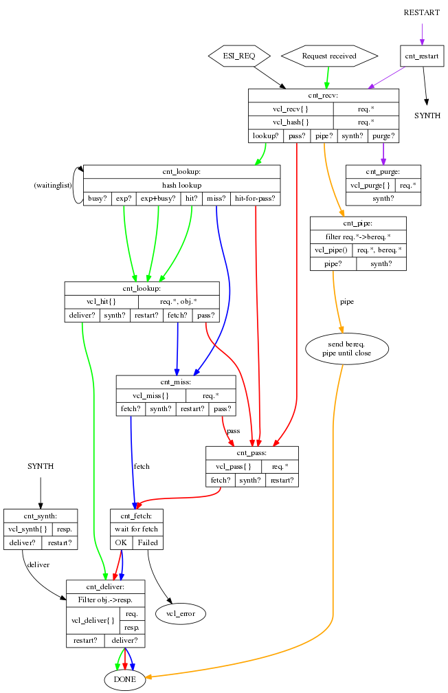

API Caching with Varnish at

Ruby Usergroup Hamburg 14.10.2015
WLW Infrastructure
- Microservices
- 13 Applications/Services
- REST APIs and AMQP
- Each record is owned by one application
- Exception is Elasticsearch
- ~3K internal API requests per minute
Local caching
class CompaniesController
TTL = 10.minutes.freeze
def show
@category = Rails.cache.fetch('some_key', expires_in: TTL) do
api_client.get("companies/#{id}/category")
end
end
end
Local caching Benefits
- No HTTP request overhead for cached calls
Local caching Drawbacks
- Each app implements it's own cache
- Cached data is duplicated in multiple caches
- Hard to invalidate all caches
- No monitoring e.g. on cache hit rates
- Only simple time based caching
Proxy caching


Why Varnish?
- Free software under BSD license
- Well documented, free books, good documentation
- Easy to introduce, few code changes
- Good experience at e.g. at XING or OTTO
Varnish Features
VCL
- DSL to configure request handling / caching policies
- Possible to change/control everything
- Good set of general rules
VCL Flow
- vcl_recv
- vcl_hash
- vcl_hit / vcl_miss
- vcl_backend_fetch
- vcl_backend_response
- vcl_deliver
VCL Flow Chart
Example routine
sub vcl_backend_response {
# Only cache json response
if (beresp.http.Content-Type !~ "application/json") {
set beresp.uncacheable = true;
}
return(deliver);
}
Setting up a cache
class APIController
def index
expires_in 1.minute, 'stale-while-revalidate': 10.minutes
header['Vary'] = ['Accept', 'Range']
render_json
end
end
Server response Header
Cache-Control: max-age=60, stale-while-revalidate=600
Vary: Accept, Range
Cache Invalidation
- Via HTTP Request
- Purge Request
- Ban list entry
api_client.get('/resource', headers: { 'Cache-Control': 'Purge' })
Other features
- Call aggregation
- Console tools
- Plugins for Munin, NewRelic, Nagios, etc.
Learnings
Performance
- Improvement from 50-60ms to ~7ms
- Biggest improvement potencial with page caching
Cache Invalidation
Avoid very long ban lists
Object expunging
Provide Varnish with enough Memory
Identify suitable calls
- Low diversity
- High request rate
- = Good hitrate
Dedicated Varnish endpoint
- Custom port or subdomain
- Better monitoring
- Explicit usage from client
Summing up
Varnish provides a convenient option for our API toolbelt